STORY
はみだしのことはみだしても、
北海道美瑛の味。
おいしいのに、お店に並ばない野菜があります。
ちょっと曲がっている。大きすぎる。小さすぎる。少しキズがある。それだけで出荷できない野菜が、美瑛の畑には毎年たくさん残ります。
形とサイズで選ばれなかっただけで、味は選ばれた野菜とおなじ。農家さんが手をかけて育てた野菜を、もったいないで終わらせたくない。だから私たちは、畑から直接受け取って、あなたの台所と、お店の厨房へまっすぐ届けます。
形やサイズが、少しちがうだけ。
味は、美瑛の畑そのままです。
UBAKU Yasai は、北海道美瑛のはみだし野菜のお店です。少し曲がっている、大きすぎる、小さすぎる。それだけでお店に並ばないトマトとアスパラを、農家さんから受け取り、産地直送でお届けします。ご家庭へも、飲食店・お店へも。
Imperfect in shape, true in taste. Straight from the farms of Biei, Hokkaido.
来年の春と夏を、
いまのうちに。
美瑛のアスパラとトマトは、畑で育つのを待つ野菜です。いまは2027年のお届け分をご予約いただけます。予約しておけば、あとは季節を待つだけ。いちばんおいしい時期に、畑からまっすぐお届けします。
年内のご予約は早割
通常の価格から100円引き[仮]
雪どけのあとの、最初の緑
夏から秋の、美瑛の赤
はみだしても、
北海道美瑛の味。
おいしいのに、お店に並ばない野菜があります。
ちょっと曲がっている。大きすぎる。小さすぎる。少しキズがある。それだけで出荷できない野菜が、美瑛の畑には毎年たくさん残ります。
形とサイズで選ばれなかっただけで、味は選ばれた野菜とおなじ。農家さんが手をかけて育てた野菜を、もったいないで終わらせたくない。だから私たちは、畑から直接受け取って、あなたの台所と、お店の厨房へまっすぐ届けます。
曲がり、大きさのばらつき、小さなキズ。はみだしは、そのまま野菜の個性です。味は、同じ畑で育った野菜と変わりません。
農家さんから直接受け取り、北海道美瑛から産地直送でお届けします。どの畑で、誰が育てたかが見える野菜です。
ご家庭で使いやすい量の箱から、飲食店・お店への卸まで。量と頻度に合わせてご相談ください。
ご家庭で使いやすい量から、たっぷりの量まで。アスパラもトマトも、3つの量からお選びいただけます。いまは2027年のお届け分のご予約です。お届けの月をお選びいただけます（日にちはおまかせください）。価格はすべて税込・送料込みです。
年内早割 12月31日までのご予約は、単品は通常の価格から100円引き[仮]、旬便は1,000円引き。
UBAKU Yasai は、はみだし野菜の専門店です。
これらは、はみだし野菜の個性です。これを理由にした返品・交換はお受けしていません。
あらかじめご了承のうえ、ご予約ください。
雪どけのあとの、最初の緑。春のお届けを、いまご予約いただけます。
ちょっと割れても、ちゃんと赤い。夏から秋の、美瑛のトマトです。
アスパラとトマトを、1回のご予約でまとめて。春から秋のはじめまで、畑の移り変わりを毎月、6回に分けてお届けします。
 写真はイメージです
写真はイメージです※ 価格はすべて税込・送料込みです。沖縄県・離島へのお届けはしていません。
※ 天候や育ちぐあいで予定の時期に出荷できないときは、時期をずらしてお届けします。それも難しいときは返金します。
ご予約のときにクレジットカードを登録・確認し、引き落としは発送のときです。旬便は1回目の発送のときに、全6回分をまとめてお支払いいただきます。
お届けの時期にあわせて美瑛から発送し、発送の前にお知らせします。天候で時期が前後するときも、事前にご連絡します。
輸送中の潰れや傷みがあったときは、届いた日に写真を添えてご連絡ください。返金で対応します。
いまのご予約は、2027年のお届け分です。天候によって、お届けの時期が前後することがあります。ご予約は、お届けの直前まで受け付けます。
美瑛の畑から、
お店の厨房へ。
形がそろわないぶん、使い方しだいで力を発揮する野菜です。美瑛のトマトとアスパラを、お店の量と頻度に合わせてお届けします。メニューに「北海道美瑛産」と書ける野菜を、産地から直接。
まとまった量を、決まった間隔で。ご希望をうかがって、出荷の量と時期をご相談します。
形やサイズを問わない使い方なら、はみだし野菜がいちばん生きます。煮込み、ソース、スープに。
美瑛のどの地区で、どんな農家さんが育てたかをお伝えできます。お店の紹介にもお使いください。
ubaku.jp のお問い合わせから、種別「野菜・食」でお送りください。
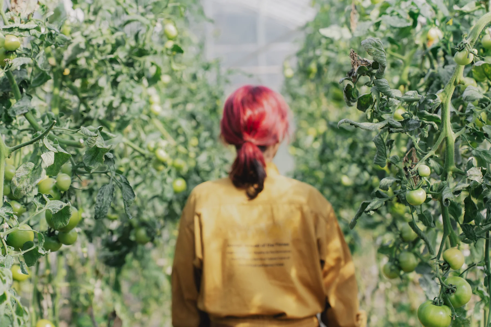
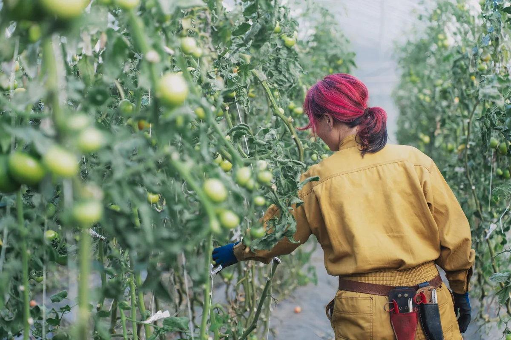
サイズが小さいとか、少し傷があるとかの理由で捨てられるのが悔しかった。同じくおいしいのに。
島田さん北海道美瑛町 朗根内地区
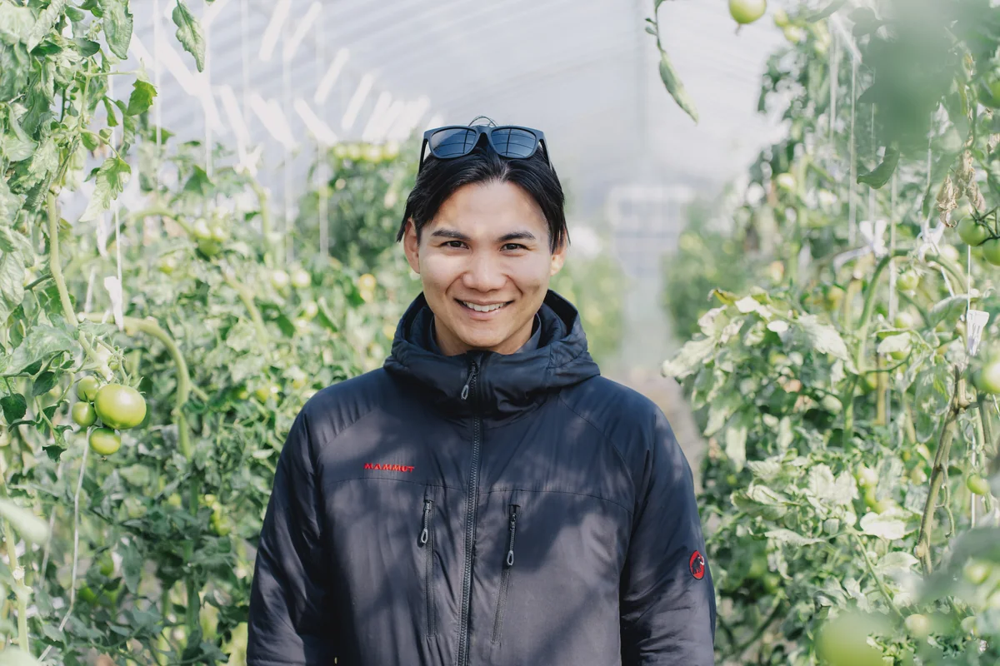
沖縄から北海道へ飛び込んだ元小学校教員。いまは美瑛の農家さんとともに畑に立ち、土と人をつなぎながら、この町に関わる人を増やしている。
Yamato のひとこと北海道美瑛の、こんなにおいしい野菜を、手に取りやすい値段で、
全国のみなさんに、全力で届けたい。
本当に必要としてくれる人が、たくさんいると思うんです。
それが、僕が UBAKU でこの仕事をやる意味です。
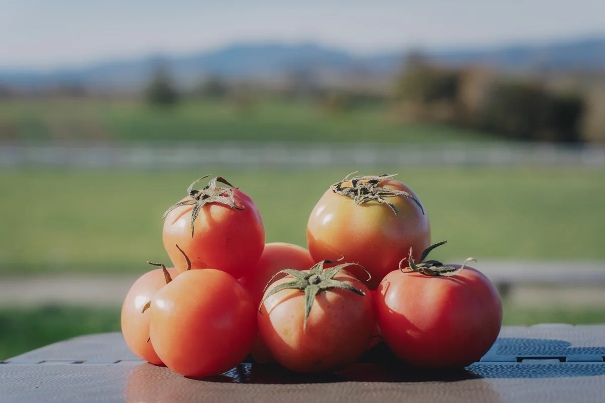
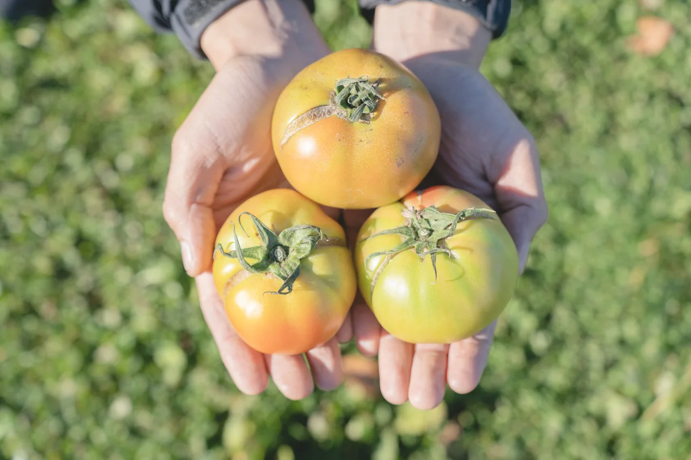
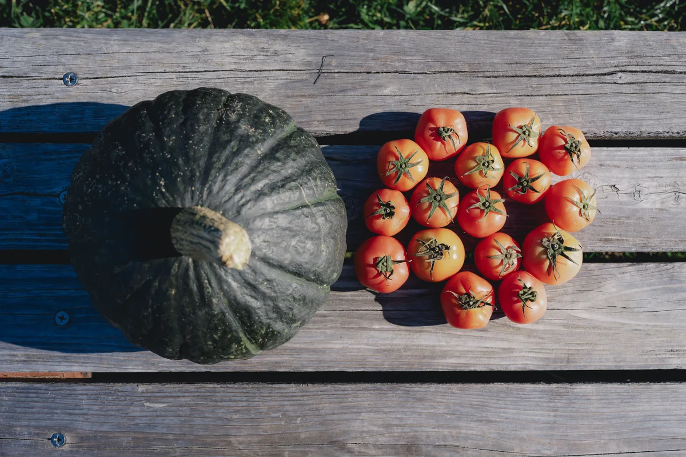
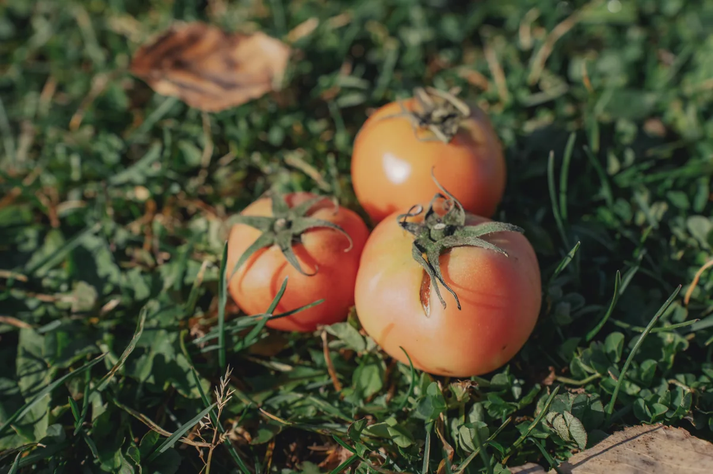
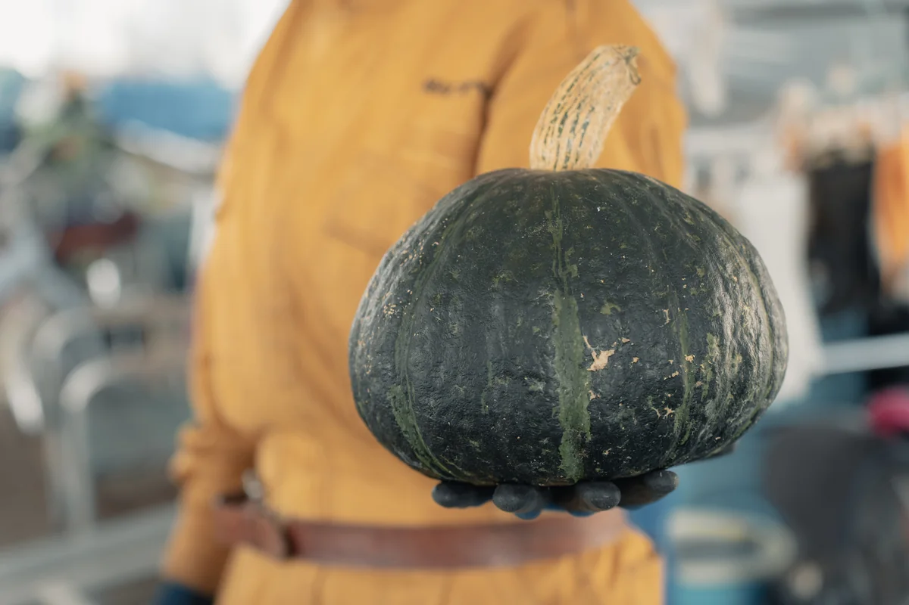
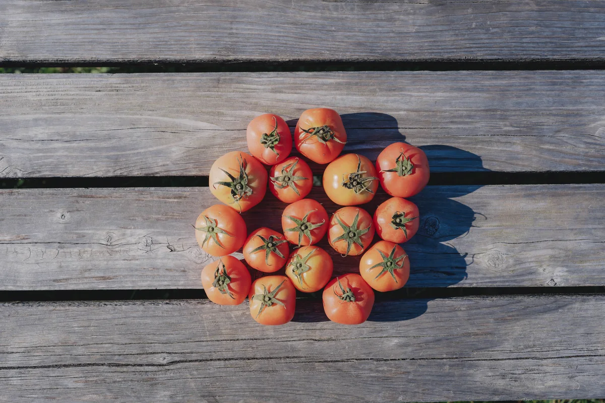
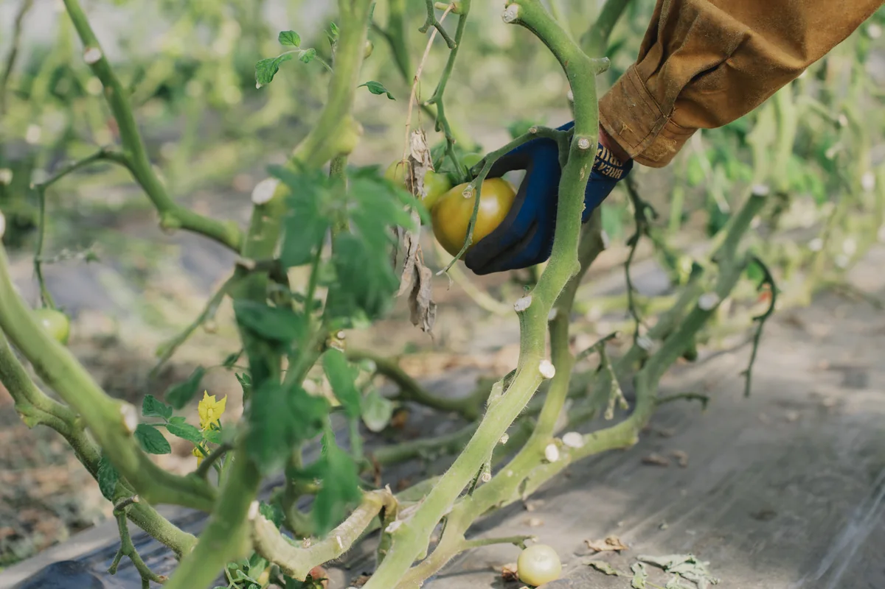
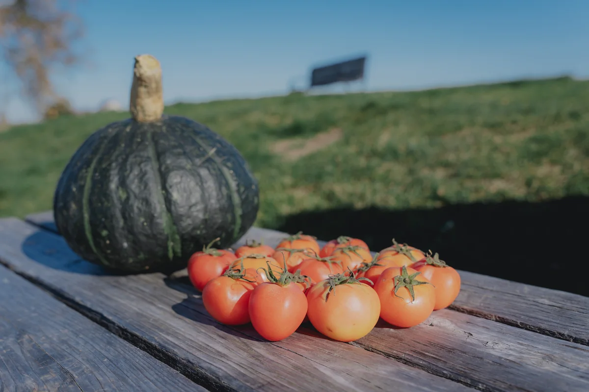
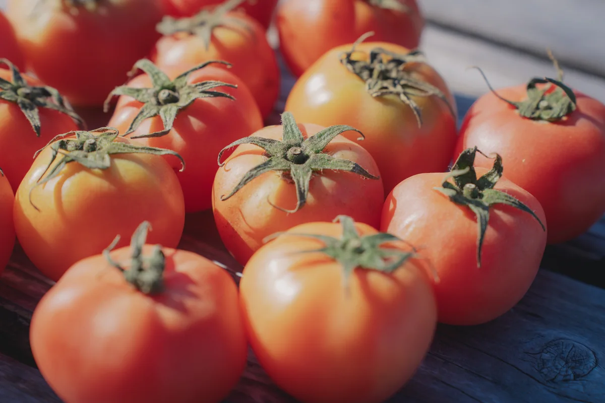
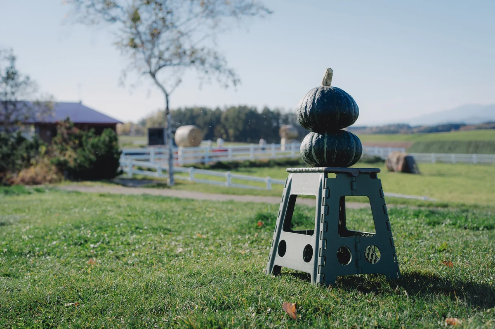
2026年10月、美瑛の畑で
できません。UBAKU Yasai は、はみだし野菜の専門店です。サイズが小さい・小さなキズがある・曲がっている・形がふぞろい、といった理由での返品・交換はお受けしていません。輸送中の潰れや傷みは、届いた日に写真を添えてご連絡ください。返金で対応します。
ちがいません。形や大きさで出荷できなかっただけで、同じ畑で同じように育った野菜です。
いまは2027年のお届け分のご予約です。アスパラは2027年5〜6月、トマトは6〜10月にお届けします。天候によって前後することがあり、発送の前にお知らせします。
2026年12月31日までのご予約が早割です。単品は通常の価格から100円引き、旬便は1,000円引きになります。
クレジットカードでのお支払いです。ご予約のときにカードを登録・確認し、引き落としは発送のときです。旬便は、1回目の発送（5月）のときに全6回分をまとめてお支払いいただきます。
卸のご相談を承っています。ubaku.jp のお問い合わせから、種別「野菜・食」で、お店の名前・使いたい野菜・量と頻度をお送りください。
お届けの月の前の月の末日までキャンセルできます。たとえば5月にお届けのアスパラは、4月30日までです。旬便は、1回目のお届け（5月）の前の4月30日までです。
お届けの月はご予約のときにお選びいただけます。日にちは、その月のいちばんおいしい時期に合わせてこちらで決め、発送の前にお知らせします。
申し訳ありませんが、沖縄県・離島へのお届けはしていません。
旬便は全6回をまとめてお申し込みいただく商品のため、途中でのご解約・返金はお受けしていません。天候などで出荷できなかった回は、時期をずらしてお届けし、それも難しいときはその回の分を返金します。
天候や育ちぐあいで予定の時期に出荷できないときは、時期をずらしてお届けします。それも難しいときは返金します。
表示の価格は、すべて税込・送料込みです（沖縄県・離島へのお届けはしていません）。
お届け先を指定してご予約いただけます。のし・ギフト包装・メッセージカードには対応していません。